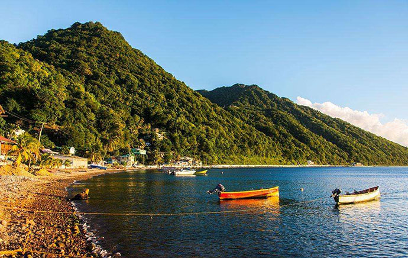
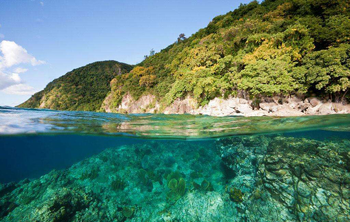
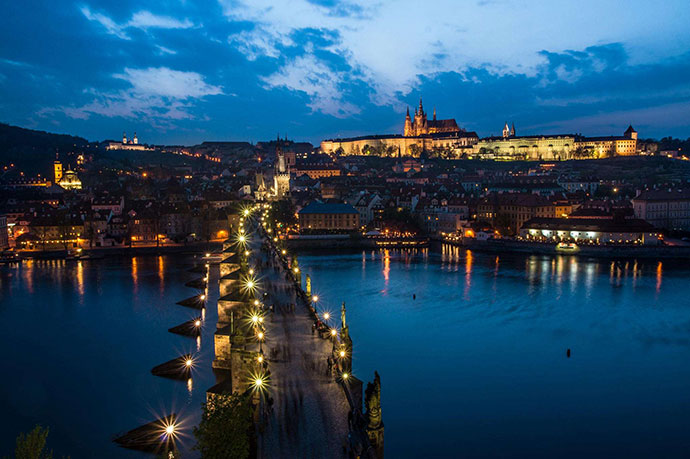

多米尼克于1993年成立公民项目，并在2014年底进行大力改革，申请流程更简易高效。多米尼克公民项目是有立法保护的全球性公民项目，旨在严格的法律监管下，通过投资计划，吸引品行良好的公民加入多米尼克，申请人及其家庭可获得多米尼克国家公民身份。2017年因遭受飓风，调整移民政策，将政府费用等第三方费用下调。
英联邦成员国多米尼克（The Commonwealth of Dominica）位于东加勒比海小安的列斯群岛东北部，东临大西洋，西濒加勒比海。 面积751平方公里， 人口约73,449人。首都罗索（Roseau）是加勒比地区唯一有河流穿过的城市，是国家政治、商业、旅游、教育、通讯和服务中心。多米尼克作为英联邦国家，其护照可免签全球125个国家。值得注意的是，多米尼克不像传统的免税天堂如瑞士，香港，百慕大，开曼群岛，并没有加入CRS，不会与中国互通两国公民的财务资产信息。
安道尔、安提瓜和巴布达、奥地利、巴哈马、巴巴多斯、比利时、伯利兹、博茨瓦纳、巴西、保加利亚、哥伦比亚、哥斯达黎加、英国、克罗地亚、古巴、塞浦路斯、捷克共和国、丹麦、多米尼加共和国、厄瓜多尔、爱沙尼亚、斐济、冰岛、芬兰、法国、冈比亚、德国、希腊、格林纳达、圭亚那、海地、香港、匈牙利、冰岛、爱尔兰、以色列、意大利、牙买加、肯尼亚、韩国、拉脱维亚、莱索托、列支敦士登、立陶宛、卢森堡、马拉维、马来西亚、马耳他、毛里求斯、密克罗尼西亚、挪威、摩纳哥、荷兰、挪威、巴拿马、秘鲁、菲律宾、波兰、葡萄牙、罗马尼亚、圣基茨和尼维斯、圣卢西亚、尼加拉瓜、纽埃、帕劳群岛、圣文森特和格林纳丁斯、圣马力诺、新加坡、斯洛伐克、斯洛文尼亚、西班牙、苏里南、斯威士兰、瑞典、瑞士、坦桑尼亚、特立尼达和多巴哥、瓦努阿图、梵蒂冈城、委内瑞拉、赞比亚、印尼、亚美尼亚，孟加拉国、玻利维亚、圣卢西亚岛、泽西岛、新胡安岛、哈萨克斯坦、肯尼亚、基里巴斯、圣皮埃尔和密克隆岛、圣文森特和格林纳丁斯、萨摩亚、圣马力诺、塞舌尔、斯洛伐克、斯洛文尼亚、所罗门岛、南乔治亚岛、南桑威奇群岛、爱沙尼亚、欧罗巴岛、斐济、法属圭亚那、柬埔寨、佛得角、科摩罗、吉布提、埃及、希腊、几内亚比绍、伊朗、约旦、老挝、马达加斯加、马尔代夫、毛里塔尼亚、莫桑比克、尼泊尔、尼加拉瓜、帕劳、萨摩亚、塞舌尔、所罗门群岛、索马里、东帝汶、多哥、汤加、图瓦卢、乌干达、澳门。
